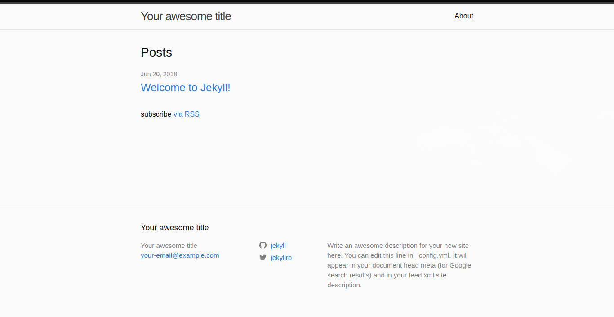

Blog on K8s with Flux
Blog on K8s with Flux
Host your own blog
on Kubernetes
using gitops with Flux
Blog on K8s with Flux
Blog on K8s with Flux
- Ivar Abrahamsen
Blog on K8s with Flux
Contents
- Introduction
- Blog
- CI build
- Docker Container Registry
- Kubernetes
- GitOps / Flux
- Secrets
- Container Registry II
- Deploy Blog
- Ingress
- Image update
Blog on K8s with Flux
Prior Art
Blog
Blog
-
Full control
- Own your content
- Theme as you like
- Not hosted by 3rd party
-
Medium,Wordpress.org,Ghost,Blogger
-
- Simple publish pipeline
Blog
Alternatives
- Hugo
- Gatsby
- Wordpress
Blog
Jekyll
- Static pages
- Ruby
- Easy to use templates
- Lots of themes
- Slow generation
Jekyll
Install
Ruby Gem
Ruby via Docker
-
docker pull jekyll/jekyll:4.2.0
Jekyll
Create blog
Create container
docker run --rm --volume="$PWD:/srv/jekyll" \
-it jekyll/jekyll:4.2.0 /bin/bash
(inside container)
jekyll new myblog
exit
(outside container)
cd myblog
git init
git commit -am "Initial"
Jekyll
Start Jekyll webserver
exposing port 4000
docker run --rm --volume="$PWD:/srv/jekyll" \
-p 4000:4000 -it jekyll/jekyll:4.2.0 /bin/bash
(inside container)
bundle exec jekyll bundler
(outside container)
open http://localhost:4000
Jekyll
Jekyll
Docker Compose
version: '3'
services:
jekyll:
image: jekyll/jekyll:4.2.0
container_name: myblog
environment:
- JEKYLL_ENV=docker
command: jekyll serve --force_polling --livereload --drafts
ports:
- 4000:4000
- 35729:35729
volumes:
- ./:/srv/jekyll
docker compose up
Jekyll
Themes
Jekyll
Draft
(outside container)
touch -p _drafts/my-first-post.md
## My first blog post
Hello everyone
open http://localhost:4000/2021/05/18/my-first-post
git add _drafts/my-first-post.md
git commit -am "First post"
gh repo create myblog
CI Build
CI Build
- Generate static blog pages
- Package as Docker image
- Upload to container registery
CI Build
Alternatives
- Github Actions
- Travis
- Google Cloud Build
- Gitlab
CI Build
CircleCI
- Free
- Integrates with your Github repositories
- Can build private projects
- Pipelines
- Configuration is a local file so can be in version control
CircleCI
Set up project
- Log in to circleci.com with Github
- On the dashboard, click on Projects on the left
- Find our blog repository, and click on "Set up project"
CircleCI
Dockerise project
touch Dockerfile
FROM nginx:1.15-alpine
COPY _site /usr/share/nginx/html
CircleCI
Create configuration
mkdir .circleci
curl -L -O .circleci/config.yml \
https://raw.githubusercontent.com/flurdy/blog/master/.circleci/config.yml
...
jobs:
build:
docker:
- image: circleci/ruby:2.6.0-node
...
steps:
...
- run:
name: Jekyll build
command: bundle exec jekyll build
...
- persist_to_workspace:
root: ./
paths:
- _site
CircleCI
Create configuration
Part 2
...
build-image:
docker:
- image: circleci/buildpack-deps:stretch
environment:
IMAGE_NAME: quay.io/yourusername/myblog
...
steps:
...
- run:
name: Build Docker image
command: docker build -t $IMAGE_NAME:latest .
...
CircleCI
Create configuration
Part 3
...
publish-image:
...
- run:
name: Upload to registry
command: |
echo "$DOCKER_PASSWORD" | docker login quay.io -u "$DOCKER_LOGIN" --password-stdin
docker push $IMAGE_NAME:latest
IMAGE_TAG="1.0.${CIRCLE_BUILD_NUM}"
docker tag $IMAGE_NAME:latest $IMAGE_NAME:$IMAGE_TAG
docker push $IMAGE_NAME:$IMAGE_TAG
...
CircleCI
Create configuration
Part 4
...
workflows:
version: 2
build-master:
- jobs:
- build:
filters:
branches:
only: master
- build-image:
requires:
- build
...
- publish-image:
requires:
- build-image
...
CircleCI
- Typos are your enemy
- CircleCI CLI as a linter
-
circleci config validate
Docker Container Registry
Docker Container Registry
- Free or cheap
Docker Container Registry
Alternatives
- Google Container Registry
- Github packages
- DigitalOcean Container Registry
- AWS ECR
Docker Container Registry
Quay
- Now owned by Redhat
- Free public repositories
- Robot credentials
Quay
- Sign up/in
- Create repository
- Create robot account for CircleCI, with write permission
-
in CircleCI
- Edit Environment variables
- Add Quay robot username as DOCKER_LOGIN
- Add Quay robot password as DOCKER_PASSWORD
Quay
Publish Jekyll blog
git mv _drafts/my-first-post.md _posts/2021-06-18-my-first-post.md
git commit -am "Published first post"
git push
- You can monitor the pipeline build in CirclCI
- Eventually you can see an image in Quay
Kubernetes
Kubernetes
Install CLI
brew install kubectl
Optionally
brew install kubectx
brew install Helm
Kubernetes
- Reasonable price
- Ingress support
- Full Kubernetes access
- Reliable
- Up to date
Kubernetes
Alternatives
- GKE - Google Kubernetes Engine
- EKS - AWS Kubernetes Service
- AKS - Azure Kubernetes Service
- The Hard Way
Kubernetes
DigitalOcean Kubernetes
(DOKS)
digitalocean.com/products/kubernetes/
- Simple to use
- Only pay for worker nodes
DigitalOcean Kubernetes
Install DO's CLI
brew install doctl
DigitalOcean Kubernetes
Create cluster
- Sign up / sign in (referral)
- Go to Kubernetes page and click Create / Kubernetes cluster
- Change cluster name at the bottom, e.g. doubledragon-01
DigitalOcean Kubernetes
Connect to cluster
-
In the 3rd section of the Getting Started part,
- Copy and execute the doctl line to download the cluster config,
-
doctl kubernetes cluster kubeconfig save 1234-1234-41234 - Test with kubectx if the kubectl context is correct
- Click through the rest of the Getting Started steps
-
Test kubectl connection with
-
kubectl cluster-info
-
- GitOps
GitOps
GitOps
GitOps
- Version controlled cluster state
Gitops
Alternatives
- Argo
- Keel
- Terraform et al
Gitops
Flux
- WeaveWorks
- Declarative
- Automated
Flux

- Recently v2 has been released
Flux
Install Flux CLI
brew install fluxcd/tap/flux
Flux
Github auth
export GITHUB_USER=your-username
export GITHUB_TOKEN=your-token
Flux
Initialise
- Verify cluster connection
flux check --pre
- Bootstrap flux
flux bootstrap github \
--owner=$GITHUB_USER \
--repository=fleet-doubledragon \
--branch=main \
--path=./clusters/doubledragon-prod \
--personal
Flux
Initialised
git clone https://github.com/$GITHUB_USER/fleet-doubledragon
cd fleet-doubledragon
tree
fleet-doubledragon/
├── clusters/
│ └── doubledragon-prod/
│ └── flux-system/
│ ├── gotk-components.yaml
│ ├── gotk-sync.yaml
│ └── kustomization.yaml
└── README.md
kubectl get all -n flux-system
Secrets
Secrets
Alternatives
- Manual Kubernetes secrets
- Mozilla's SOPS
Secrets
Sealed Secrets
Sealed Secrets
Install CLI
brew install kubeseal
Sealed Secrets
Helm chart
Add Helm repository
flux create source helm sealed-secrets \
--interval=2h \
--url=https://bitnami-labs.github.io/sealed-secrets
Create Helm release
flux create helmrelease sealed-secrets \
--interval=2h \
--release-name=sealed-secrets \
--target-namespace=flux-system \
--source=HelmRepository/sealed-secrets \
--chart=sealed-secrets \
--chart-version=">=1.15.0-0" \
--crds=CreateReplace
git add sealed-secrets-source ???
git add sealed-secrets-release ???
Sealed Secrets
Public key
cd clusters/doubledragon-prod
mkdir secrets
kubeseal --fetch-cert \
--controller-name=sealed-secrets \
--controller-namespace=flux-system \
> secrets/pub-sealed-secrets.pem
git add secrets/pub-sealed-secrets.pem
Container Registry
Part Deux
Container Registry
Create secret
cd clusters/doubledragon-prod
mkdir registry
kubectl create secret docker-registry quay-registry \
--dry-run
--docker-server=quay.io \
--docker-username:MYROBOTUSER \
--docker-password=MYROBOTPASSWORD \
-o yaml > registry/quay-clear.yml
Container Registry
Encrypt secret
kubeseal --format=yaml \
--cert=secrets/pub-sealed-secrets.pem \
< registry/quay-clear.yml \
> registry/quay-encrypted.yml
git add registry/quay-encrypted.yml
rm registry/quay-clear.yml
Verify
git commit -m "registry added"
git push
kubectl get secret,sealedsecret
Deploy Blog
Deploy Blog
KustomizeGitRepositoryCertificate
Deploy Blog
Create Namespace
mkdir -p clusters/doubledragon-prod/arcade
cd clusters/doubledragon-prod/arcade
touch namespace.yml
apiVersion: v1
kind: Namespace
metadata:
name: arcade
git add namespace.yml
git commit -m "Added arcade namespace"
git push
Deploy Blog
Create Deployment
mkdir myblog
touch myblog/deployment.yml
apiVersion: apps/v1
kind: Deployment
metadata:
name: myblog-deployment
annotations:
fluxcd.io/automated: "true"
spec:
selector:
matchLabels:
app: myblog
replicas: 2
template:
metadata:
labels:
app: myblog
spec:
containers:
- name: myblog-container
image: quay.io/yourusername/myblog:1.0.1
ports:
- containerPort: 80
imagePullSecrets:
- name: quay-registry
git add myblog/deployment.yml
Deploy Blog
Create Service
touch myblog/service.yml
apiVersion: v1
kind: Service
metadata:
name: myblog-service
spec:
selector:
app: myblog
ports:
- protocol: TCP
port: 80
targetPort: 80
git add myblog/service.yml
Deploy Blog
Monitor rollout
git commit -m "Added myblog"
git push
watch flux get kustomizations
watch kubectl -n default get deployments,services
NAME READY UP-TO-DATE AVAILABLE AGE
deployment.apps/myblog 2/2 2 2 108s
NAME TYPE CLUSTER-IP EXTERNAL-IP PORT(S) AGE
service/myblog ClusterIP 10.100.149.126 9898/TCP,9999/TCP 108s
Ingress
Ingress
Alternatives
- HAProxy
- Istio
- Traefik
- Envoy
- Kong
- Nginx.org
- GCP, AKS, EKS ingress
Ingress
Nginx
Ingress-nginx
Ingress
Nginx
flux create source helm nginx \
--url https://kubernetes-charts.storage.googleapis.com
flux create helmrelease --chart my-nginx \
--source HelmRepository/nginx \
--chart-version 1.26.1 \
--namespace nginx
Ingress
Blog Ingress
Create Ingress
touch clusters/doubledragon-prod/arcade/myblog/ingress.yml
apiVersion: extensions/v1beta1
kind: Ingress
metadata:
name: myblog-ingress
annotations:
kubernetes.io/ingress.class: nginx
spec:
rules:
- host: myblog.example.com
http:
paths:
- backend:
serviceName: myblog-service
servicePort: 80
git add clusters/doubledragon-prod/arcade/myblog/ingress.yml
Blog Ingress
Publish
git commit -m "myblog ingress"
git push
Monitor
watch kubectl get ingress
NAME HOSTS ADDRESS PORTS AGE
myblog-ingress myblog.example.com 5.4.3.2 80 3s
Test
curl -H "Host: myblog.example.com" \
--resolve hello.example.com:80:5.4.3.2 \
http://myblog.example.com | lynx -stdin
Image update
Image update
- Polls repository for image versions
- Included in v1
- Alpha in v2
Image update
Image repository
cd ./clusters/doubledragon-prod
flux create image repository myblog \
--image=quay.io/yourusername/myblog \
--interval=5m \
--export > ./arcade/myblog/registry.yaml
Image policy
flux create image policy myblog \
--image-ref=myblog \
--select-semver=1.0.x
--export > ./arcade/myblog/policy.yaml
Image update
git add arcade/myblog/registry.yaml
git add arcade/myblog/policy.yaml
git commit -m "image scan"
git push
Force Flex to pull
flux reconcile kustomization flux-system --with-source
List images found
flux get image repository myblog
flux get image policy myblog